2024-03-06 현금 501,000원으로 투자 시작.
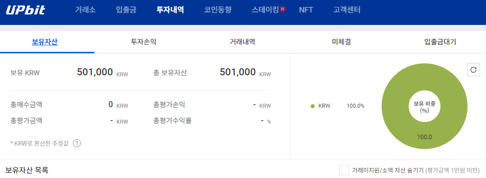
3월 1일, 에이다는 955원에서 910원까지 내려갔다가
다시 반등하며 1080원까지 올라갔었다.
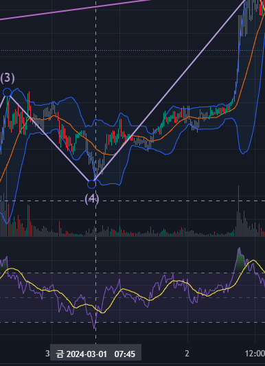
3월 3일, 다시 또 에이다는 비슷한 패턴으로 1030원에서 950원까지 내려갔다가
다시 반등을 하며 1110원까지 올라갔었다.
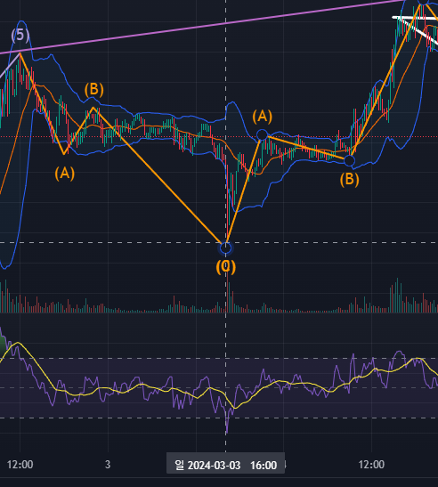
3월 6일, 또다시 에이다가 비슷한 패턴으로 만들어지고있다.
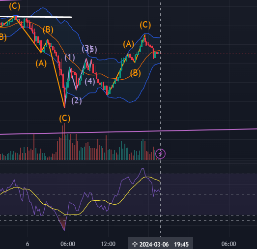
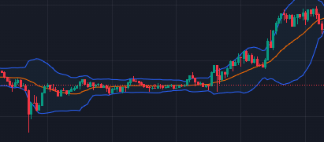
3월 3일
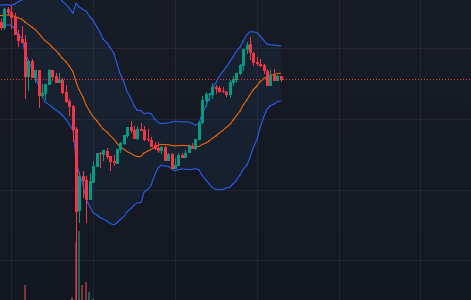
3월 6일
따라서 현재 RSI지표
( 가격의 상승 압력과 하락 압력 간의 상대적인 강도 )
가
낮은 지금이 매수 타이밍이라고 생각.
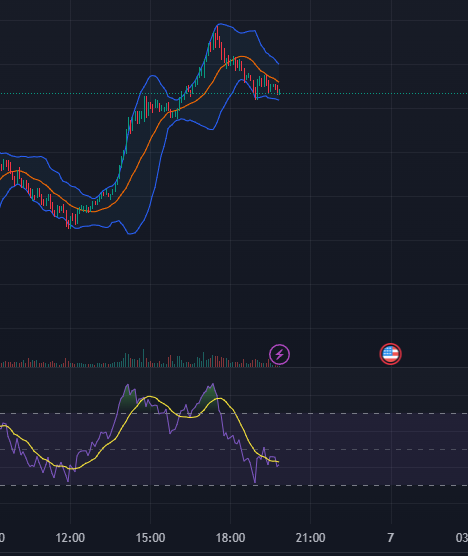
오후 8시 15분
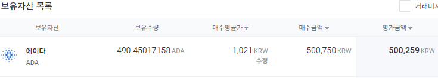
50만원 채결
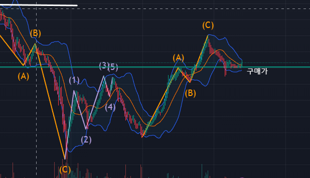
새벽 12시에 나스닥 지표 발표와 코인 관련 연설이 있다는 것을 모르고
12시까지 하락세였다가 아침 7시50분 1026원으로 탈출
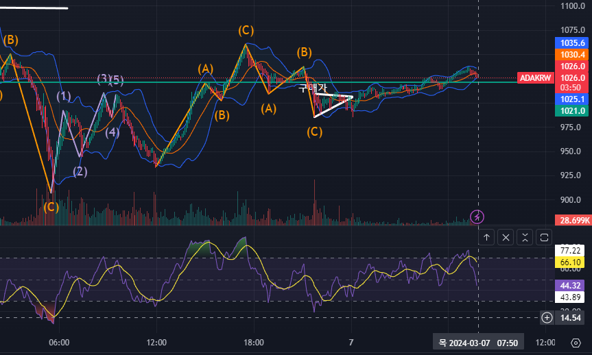
현재 자산: 502950원
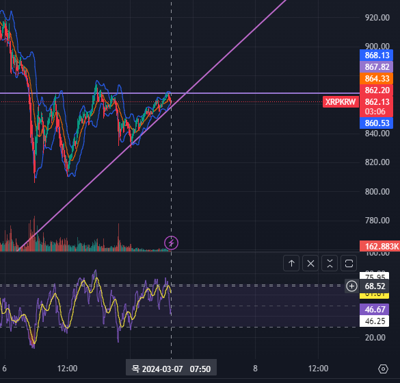
리플이 반등이 나올 가능성 있는 자리에 왔다.
Rsi 지표가 과매수 구간이기에 과매도 구간에 진입하면 매수.
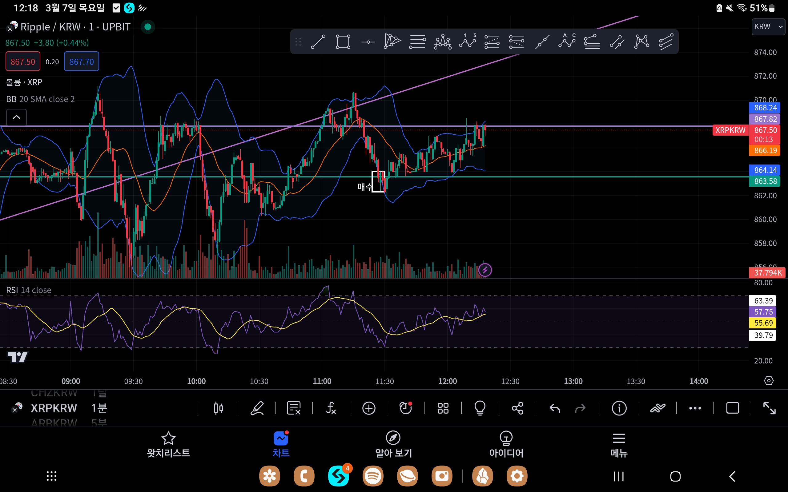
리플 863원에 매수 - > 890원에 매도
+8000원 수익
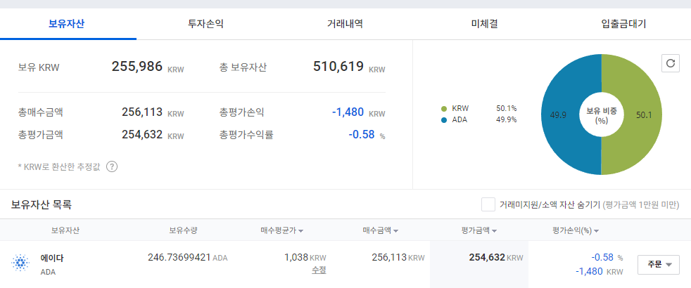
3월 7일 오후 10시 에이다 25만원치 구매 ( 1038원 )
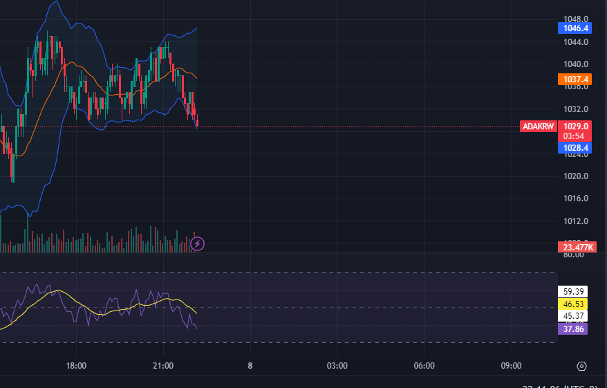
예상하던 반등 구간 ( 1030원 )에서 반등이 나오지 않자,
매도
-2000원
이후 변동성이 너무 심해서 자산 50만 2000원까지 내려옴
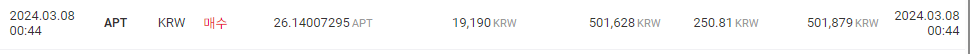
오전 12시 APT 구매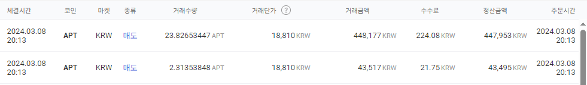
하지만 판단 미스라고 생각해서 만원 손절
자산 49만원
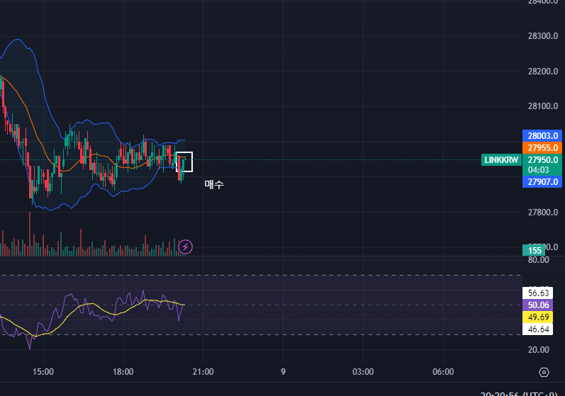
체인링크 27950 매수 ( 49만원 )
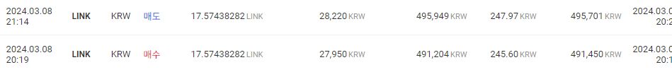
28220에 매도
49만 -> 49만5900원
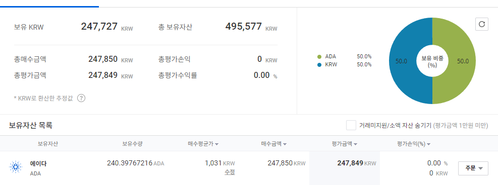
에이다 1031 매수 ( 24만7850원 )
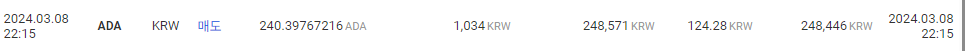
1034 매도 (비트코인이 하락추세라고 판단)
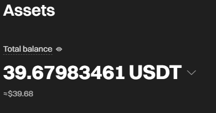
해외 거래소로 5만원 입금
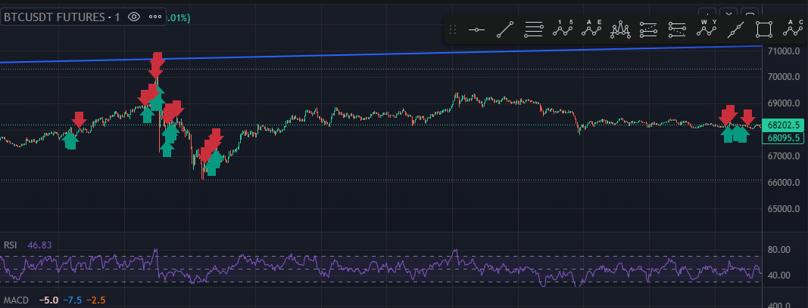
단타로 14만원 수익 (운이 굉장히 좋았음)
현재 시장의 흐름이 너무 어려워서
단타로 수익을 얻기 힘들겠다고 판단.
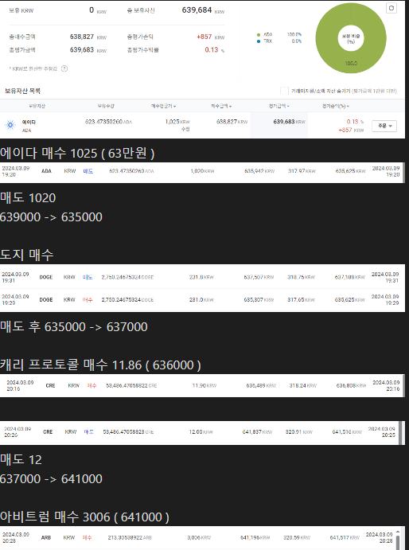
아직도 아비트럼을 홀딩(장기투자)중이다.